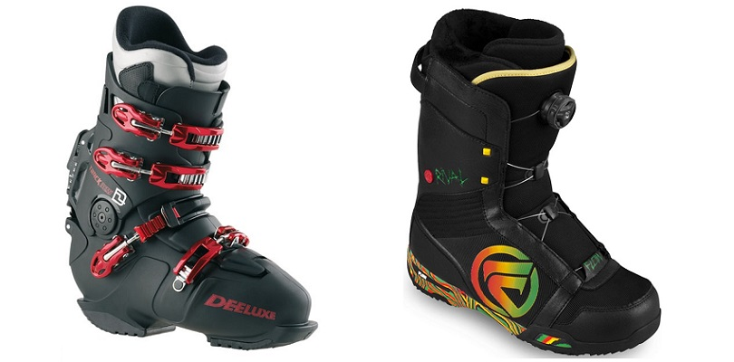
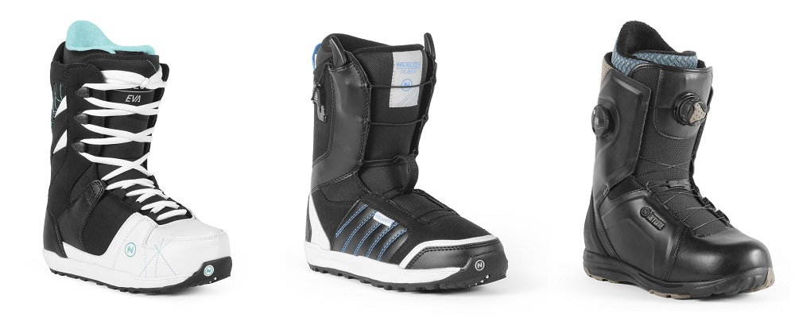
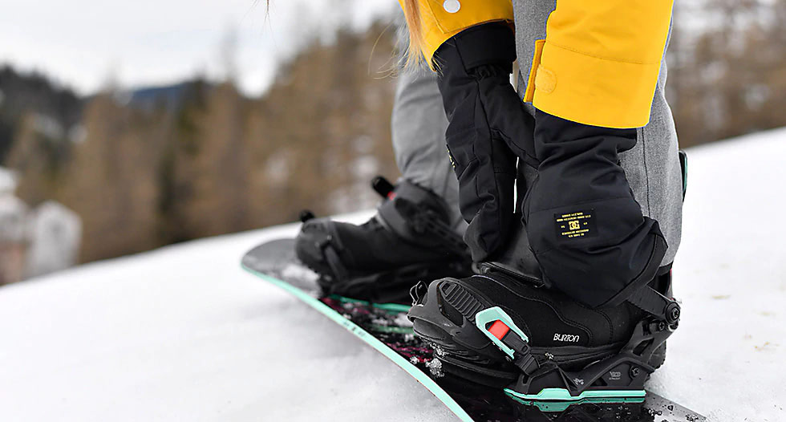
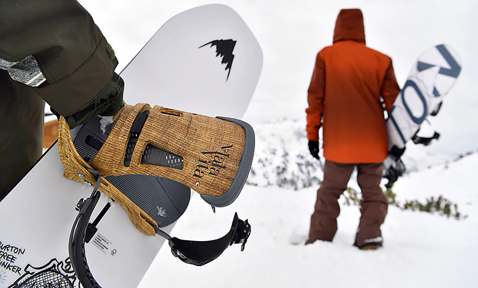
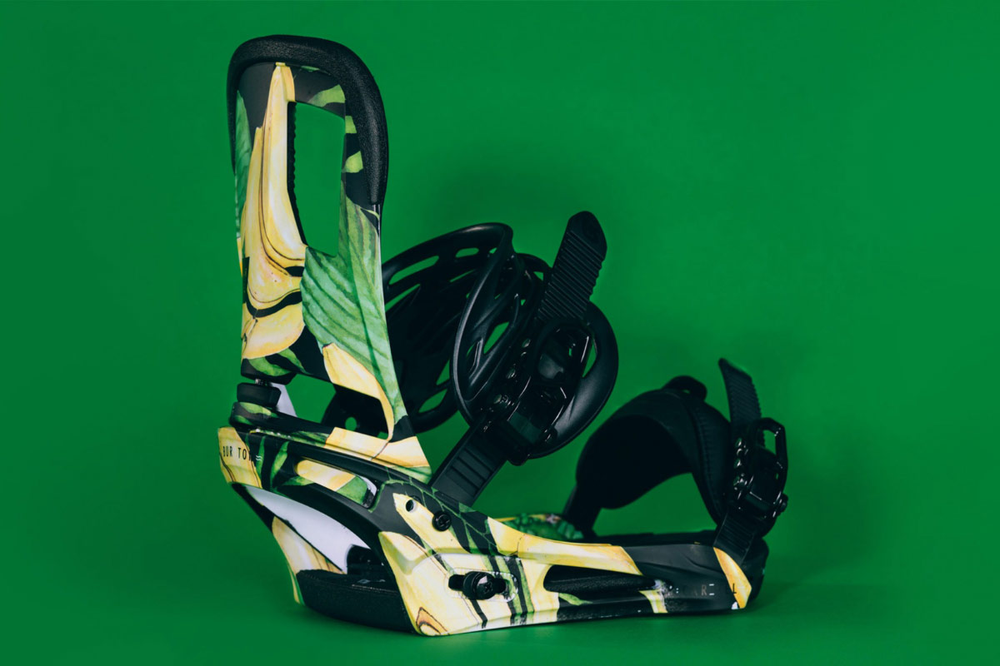
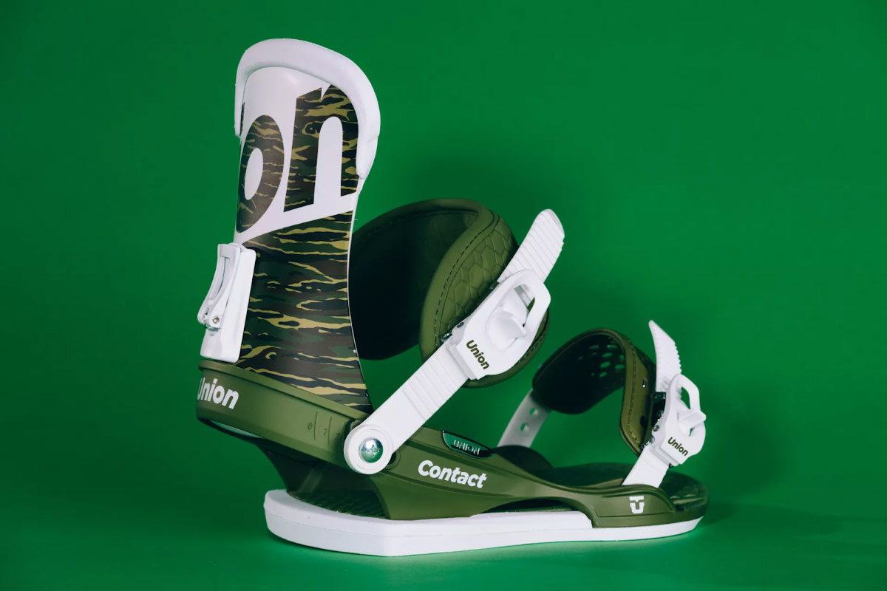

Чтобы покататься на доске, необязательно знать все о сноубординге, достаточно понять, что это специфический и травмоопасный вид спорта. Он подразумевает использование специальной экипировки, которая предназначена предотвратить травмы спортсмена и при этом быть максимально комфортной. Поэтому к выбору стоит относиться наиболее ответственно.
С важностью этого элемента может сравниться только наличие снега на склоне. Действительно, к выбору борда нужно отнестись наиболее внимательно. Перед покупкой стоит обратить внимание на следующие моменты:
- Длина. Это соотношение размера сноуборда по отношению к весу сноубордиста. Производители досок обычно пишут рекомендуемый вес райдера на борде, так что с этим сложностей не возникнет.
- Ширина. Она целиком зависит от размера вашей обуви. Оптимальное соотношение ширины доски и размера обуви обеспечивает максимальный контроль при спуске со склона.
- Конструкция. Существуют два вида – это CAP и SIDEWALL. Они в основном влияют на стоимость сноуборда. Первый дешевый, но хрупкий. Второй достаточно износостойкий, но дорогой.
- Форма изгиба. Она делится на следующие типы. Camber – традиционный борд, подходящий для всех стилей катания. Rocker – доски с этой формой изгиба подходят для любителей фристайла. Flat подходит для фристайла, но вмещает в себя характеристики Camber’a.
- Половой признак. Так как в наше время многие девушки увлекаются сноубордингом, производители предусматривают изготовление женской экипировки.
Если Вы думаете, что самое важное при выборе сноубордического комплекта – это сноуборд, то тут Вы ошибаетесь. Ботинки для сноуборда – вот о чем Вы должны подумать в первую очередь. Ведь это в них Вы будете находиться дольше всего, от них напрямую зависит комфорт, безопасность и Ваше настроение.
При выборе ботинок для сноуборда все немного проще чем с доской. Здесь два основных параметра и еще несколько менее существенных. Итак, поехали..
Жесткость ботинок
Жесткость ботинок очень важный фактор с точки зрения безопасности Ваших ног. Для того чтобы правильно выбрать жесткость нужно придерживаться Вашего уровня и стиля катания. Жёсткие ботинки для сноуборда используются для карвинга и слалома, они отличаются по конструкции от тех ботинок, которые мы с Вами привыкли видеть на склонах. Для скоростных спусков с резкими поворотами нужна очень хорошая фиксация стопы, чтобы избежать различных травм. В ботинках для слалома и карвинга верхняя часть ботинка выполнена из пластика, а внутренняя из мягкого подкладочного материала. За счет большого количества застежек-клипс обеспечивается надежное, плотное прилегание ботинка. Такие ботинки очень похожи на лыжные, но имеют существенные отличия – они больше наклонены вперед и сгибаются в стороны.
Мягкие ботинки подходят для прыжков, выполнения трюков и просто фанового катания. Такие ботинки мы привыкли видеть на склонах.
Мягкие ботинки имеют свою шкалу жесткости от 1 до 10. Как правило, от 1 до 3 – это мягкие ботинки. Чем ботинки мягче, тем Вашим ногам будет комфортнее, движения передаются на доску не сразу, поэтому есть время подумать, отличный вариант для новичков. Такие ботинки хороши первых 1-2 сезонов, когда Вы начнете прогрессировать, лучше взять ботинки средней жесткости.
Ботинки средней жесткости имеют показатели где-то 4-5. Такие ботинки можно назвать универсальными. Они подойдут и для новичков, и для продвинутых райдеров, хороший вариант для фристайла. В таких ботинках ноге также достаточно комфортно, лучше передача движений к доске. Таких ботинок Вам хватит надолго. Даже если Вы покупаете свой первый комплект и первые ботинки для сноуборда – берите среднюю жесткость и не прогадаете.
Ботинки средней жесткости имеют показатели где-то 4-5. Такие ботинки можно назвать универсальными. Они подойдут и для новичков, и для продвинутых райдеров, хороший вариант для фристайла. В таких ботинках ноге также достаточно комфортно, лучше передача движений к доске. Таких ботинок Вам хватит надолго. Даже если Вы покупаете свой первый комплект и первые ботинки для сноуборда – берите среднюю жесткость и не прогадаете.
Жесткие ботинки от 6 до 10. В таких ботинках все Ваши движения быстрее передаются на доску. Чем жестче ботинок, тем больше у Вас контроля над доской и тем быстрее ее реакция на все Ваши движения. С комфортом здесь будет похуже, чем в мягких ботинках, при жесткости 10 Вам и вовсе может быть не комфортно. Но это компенсируется отдачей, скоростью и безопасностью Ваших ног.
Некоторые производители делают ботинки с регулируемой жесткостью. Это обеспечивается за счет специальных пластиковых вставок. Например, без вставок жесткость ботинок 7, а со вставками – 10. Это очень удобно для тех, кто катается в разных стилях.
Материал ботинок для сноуборда
Ботинки для сноуборда могут быть двойными – состоят из самого ботинка и внутреннего, как правильно вынимающегося, сапожка и одинарные – без внутреннего сапожка. Одинарные ботинки чаще всего используют в прокате или не дорогие производители. Поговорим о ботинках с внутренним сапожком.
Внешняя часть ботинка может быть изготовлена как из натуральной кожи, так и из искусственных и синтетических материалов. Многие могут подумать, что кожа лучше и качественнее, но это не совсем так. Кожаные ботинки для сноуборда хорошо впитывают воду и влагу и со временем очень сильно деформируются. Ботинки, выполненные из синтетических материалов, пропитывают специальными водоотталкивающими средствами, поэтому можно не бояться, что они промокнут.
Внутренний сапожок, или внутренник, как правило, изготавливают из термо формируемого материала, это может быть вспененный EVA в сочетании с другими синтетическими материалами. Лучше выбирать ботинки со съемным сапожком, это позволит без проблем высушить ботинки внутри. Как мы уже говорили, сапожок изготавливается из материала, поддающегося термоформовке. Смысл ее состоит в том, в нагретом состоянии материал принимает форму Вашей ноги. Сделать термформовку можно в некоторых магазинах и мастерских, можно сделать самостоятельно, при наличии специального фена. А можно и не делать. Ботинки примут форму Вашей ноги после нескольких усиленных катаний, и мы считаем, что это самый лучший вариант, т.к. это происходит в естественных, привычных ботинкам условиях.
Система шнуровки ботинок для сноуборда
Классическая шнуровка – традиционная система шнуровки, как в любой обычной обуви. Здесь есть свои плюсы и минусы. Для того чтобы зашнуровать ботинки Вам понадобится достаточно большое количество времени. Но такой шнуровкой Вы сможете обеспечить необходимое для Вас усилие и максимально точно зафиксировать ногу. Шнурки для сноубордических ботинок отличаются своей прочностью и долговечностью. Если у Вас порвались или протерлись шнурки, то их легко заменить, даже на склоне. Ботинки с классической шнуровкой дешевле.
Быстрая шнуровка – название говорит само за себя. Главное достоинство – быстрота затягивания, натягиваете шнурки, а они сами фиксируются в петлях. Это двухзонная система шнуровки, Вы сможете отрегулировать затяжку ступни и голени отдельно. Затягивается шнуровка очень просто, даже на склоне в перчатках. Однако если шнурки перетрутся или порвутся, то придется обратиться в мастерскую по ремонту ботинок для сноуборда. И будет хорошо, если запасные части окажутся в наличии, а иначе на какое-то время придется остаться без каталки.
BOA – быстрая, современная и надежная шнуровка, позволяющая точно настроить степень затяжки. Представляет собой тонкий тросик, который пропущен через петли, фиксируется специальным колесиком. Защелкиваете колесико и крутите пока не почувствуете, что нога достаточно зафиксирована. Для того чтобы ослабить или снять ботинок необходимо всего лишь потянуть колесико. Система шнуровки BOA также, как и быстрая шнуровка бывает двухзонной. Ботинки легко зашнуровать, не снимая перчаток, а это очень важно при низких температурах. Фурнитура Boa® не собирает воду, грязь и лед, не увеличивая тем самым вес обуви. Компания Вoa даёт пожизненную гарантию на свои компоненты шнуровки, поэтому если у Вас случились неполадки с системой шнуровки, Вам заменят комплектующие абсолютно бесплатно. Единственный недостаток такой системы шнуровки – если она все-таки выйдет из строя, то необходимо обращаться в мастерскую по ремонту. А если в мастерской не окажется комплектующих, то придется потратить время на ожидание запчастей. Такая система шнуровки значительно повышает стоимость ботинка.
Анатомия креплений. На что нужно смотреть при выборе
Бакли
Бакли — это храповые замки, которые затягивают ремни-стрепы и фиксируют ботинок. И одновременно это едва ли не самая раздражающая деталь во всей конструкции сноубордических креплений при недобросовестном исполнении. Некачественные бакли могут заедать, спонтанно расстёгиваться и ломаться в самый неподходящий момент. А пользоваться ими на склоне придётся часто: как минимум отстёгиваться перед посадкой на подъёмник и встёгиваться обратно в крепления перед спуском. Поэтому бакли могут испортить впечатление даже от неплохих в остальном креплений, и вы будете жалеть о потраченных деньгах.
Как правило, некачественные бакли — это визитная карточка наиболее дешёвых креплений на рынке. Но и у серьёзных производителей порой случаются проколы, поэтому перед покупкой всегда стоит удостовериться в чёткости их работы — застёжка должна максимально легко сниматься, а потом быстро и плотно затягиваться. Титул лучших в индустрии по праву удерживают патентованные бакли Burton, которые ещё и совершенствуются с годами, — пример тому недавние Double Take с косой насечкой на гребёнке.
Важными компонентами застёжек являются и сами гребёнки — именно на них фиксируются замки-бакли. Важно, чтобы они были прочными и достаточно гибкими, при этом сохраняли свою эластичность на холоде. При встёгивании в крепления на гребёнки часто наступают, и если они задубели, то сломать их очень легко. Стоит ли говорить, что найти замену на курорте будет непросто, и столь мелкая деталь может испортить весь отпуск. «Дубовые», плохо гнущиеся гребёнки обычно «фирменная» черта дешёвых креплений, поэтому лучше не экономить, а отдавать предпочтение хотя бы бюджетным моделям от серьёзных производителей. Они используют морозостойкий пластик, который сохраняет свою гибкость на холоде, а в некоторых случаях, например в креплениях Arbor, гребёнки даже дополнительно укрепляют стальным тросиком.
Проверить работу гребёнки и бакли можно в магазине. Если они плохо состёгиваются и расстёгиваются даже в тёплом помещении, то на холодном склоне эти проблемы только усугубятся.
Хайбек
Высокий задник креплений, прилегающий к голенищу ботинка, называется хайбек и служит для точной передачи усилий райдера на задний кант доски. Когда говорят о жёсткости креплений, подразумевают в первую очередь жёсткость хайбека.
Жёсткие хайбеки необходимы фрирайдерам и любителям покарвить на сноуборде на крутых и леденистых склонах — для максимально точного контроля над сноубордом на высоких скоростях. Мягкий и гибкий хайбек необходим поклонникам фристайла и катания в парке — с ним будет проще давить прессы и делать красивые грэбы. Мягкие крепления также подойдут новичкам за их более «прощающий» характер — небольшие огрехи в технике будут компенсироваться их не столь точной передачей усилий на кант.
Оптимальный выбор для большинства райдеров — средние по жёсткости крепления, которые, как правило, находятся в среднем ценовом диапазоне в рамках модельного ряда одного производителя. При выборе учтите, что различные графические и цифровые индексы жёсткости креплений не унифицированы и справедливы только для модельного ряда одного бренда.
Удостовериться в том, какой перед вами хайбек — жёсткий или гибкий, можно лично. Достаточно просто погнуть его в руках. Но на управляемость сноуборда также влияет жёсткость базы креплений. Проверить её «руками» уже не выйдет, поэтому придётся довериться рекомендациям производителя. Чаще всего жёсткая база подразумевает жёсткий хайбек, и наоборот. Но иногда сочетание может быть иным. Так, компания Flux даже указывает сразу два индекса жёсткости — отдельно для базы и хайбека.
На примере жёсткости лучше всего видно, что составляющие сноубордического комплекта должны быть хорошо согласованы между собой. Жёстким креплениям для эффективной работы требуются жёсткие ботинки и доска, и наоборот.
База креплений
Название этой детали говорит само за себя — это основание креплений, которое крепится к сноуборду и куда встают ноги райдера. От базы требуются прочность и по возможности небольшой вес. Сломать качественно исполненную базу проблематично. Поэтому некоторые производители, например Burton и Union, не скупятся на пожизненную гарантию на неё при отсутствии внешних механических повреждений — сколов, зарубов и прочего.
 База креплений может быть монолитной, как, например, у Burton, Flux, Salomon, или обладать регулируемой пяточной дугой — как у Union, Nitro, Arbor или Rossignol. Первые варианты при прочих равных прочнее. Вторые — благодаря регулировке совместимы с бо́льшим числом ботинок, но тяжёлым райдерам придётся поискать усиленные версии таких креплений. Например, компания Union специально для них выпускает линейку Force.
Иногда производители делают базу креплений немного подвижной в поперечном направлении. Burton в креплениях EST использует «шарнир» Hinge, а Salomon изготовляет пяточную дугу подвижной за счёт «ремня» из кевларовых волокон. Всё это делает физику олли на сноуборде похожей на олли на скейте — прыжок получается выше. В карвинге небольшая поперечная подвижность креплений позволяет зарезаться в склон ещё глубже, так как крепление чуть сгибается вместе с ботинком.
Важной деталью базы сноубордических креплений являются виброгасящие вставки, выполненные из различных полимеров — вспененной резины, EVA или геля. Здесь всё просто: чем больше предполагаемые ударные нагрузки на ваши ноги, тем «жирнее» должна быть амортизация. Без неё точно не обойтись любителям прыгать в парке, а также фрирайдерам, предпочитающим высокие дропы. Наилучшей амортизацией обладают крепления Burton EST, благодаря отсутствию дисков и пластиковых деталей под ботинком.
Стрепы
Ремешки креплений должны плотно охватывать ботинок и прижимать его к базе. Чем лучше он будет зафиксирован, тем точнее будет передача усилий райдера и тем чутче доска будет реагировать на его движения. Хорошие стрепы охватывают ботинок очень плотно, но не передавливают ногу. А очень хорошие — на ногах и вовсе почти неощутимы.